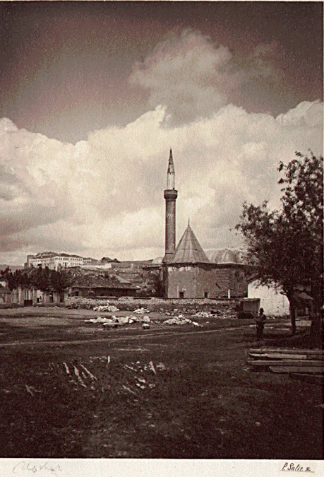
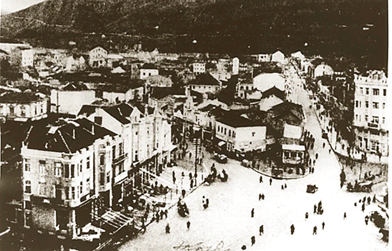
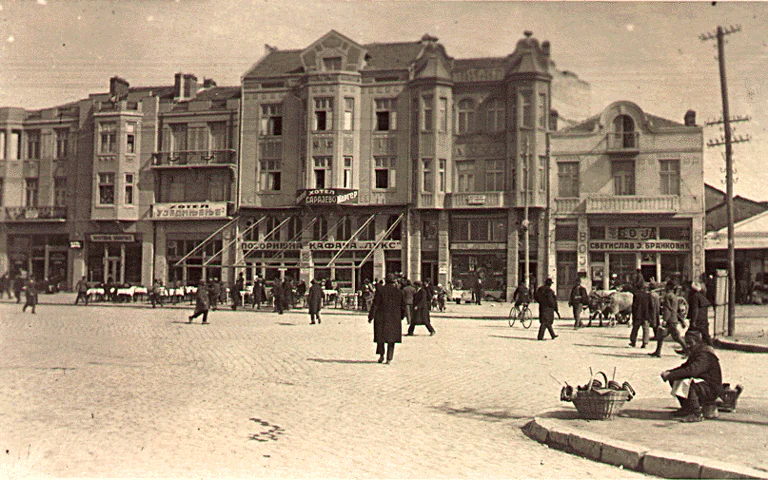
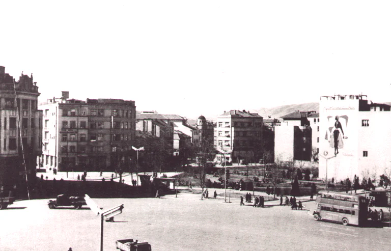
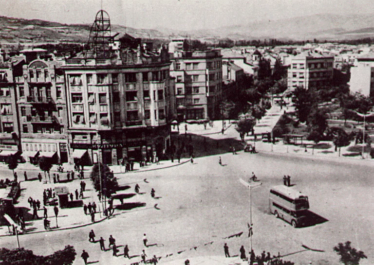
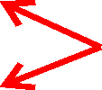

Praznovanje - trg
- Scenarij
- Aco Petrovski in Aki Pavlovski
- Režija
- Trajče Popov
- Snemalec
- Kiro Bilbilovski in Trajče Popov
- Leto
- 1949
- Trajanje
- 00:19

Trg mesta Skopje, posnet okoli sredine 19. stoletja.

Skopje konec 19. stoletja. Trg z Burmali mošejo in nekaj stavbami okoli nje. Neurejena ulica. Zbirališče prevoznikov blaga z volovskimi vpregami.

Trg konec 19. in na začetku 20. stoletja. V ospredju je postajališče kočij in vprežnih voz. Desno se v dveh vrstah raztezajo stavbe tik pred kamnitim mostom. Za njimi je Burmali mošeja. Levo od nje so stanovanjske stavbe, tik za njimi pa se vidi del banke. V ozadju se dviga skopska trdnjava - Kale z vojašnico.

Trg konec 19. in na začetku 20. stoletja. V ospredju je postajališče kočij in vprežnih voz. Desno se v dveh vrstah raztezajo stavbe tik pred kamnitim mostom, v katerih so bile trgovine in obrtne delavnice. Levo od njih je Burmali mošeja, ob njej pa stanovanjske stavbe. V ozadju se dviga skopska trdnjava - Kale z vojašnico.

Skopje med balkanskima vojnama. Burmali mošeja s postajališčem kočij. Desno od nje se vidijo obojestransko zgrajene stavbe pred vhodom na Kamniti most, v katerih so bile trgovine in obrtniki. V ospredju se vidijo čistilci čevljev in vojaki. Ulica ima odprte kanale za meteorno vodo.

Del trga pred Kamnitim mostom (med balkansko vojno). Vidne so netlakovane ulice. Stavba levo je ena od stavb, zgrajenih v dveh vrstah pred Kamnitim mostom. V njih so bile trgovine in obrtne delavnice. Okoli leta 1920 so jih porušili.

Skopje, okoli 1920. Del mestnega trga pred Kamnitim mostom. Prvi kioski za storitve in prodajo. Kioski imajo poudarjeno arhitekturo v podrobnostih, tj. v oblikovanju streh. Most je razširjen s pešpotnimi konzolami.

Skopje, okoli 1920. Urejen mestni trg z mestnimi elementi, obzidanim zelenim skverom, urejenimi tlakovanimi površinami in tlakovanimi pločniki z robniki. Poudarjen dostop do Kamnitega mostu z odprtim pogledom na reko in mestno trdnjavo. Živahnost meščanov in kočij kot javnih prevoznih sredstev.

Skopje, okoli 1920. Urejen mestni trg z mestnimi elementi, obzidanim zelenim skverom, urejenimi tlakovanimi površinami in tlakovanimi pločniki z robniki. Poudarjen dostop do Kamnitega mostu z odprtim pogledom na reko in mestno trdnjavo. Živahnost meščanov in kočij kot javnih prevoznih sredstev.

Skopje po prvi svetovni vojni, na začetku urejanja mestnega trga. Porušene so stavbe za Burmali mošejo, pred Kamnitim mostom. Most ima novo ograjo na pešpotnih konzolah. V ozadju se vidi del četrti Pajko na levem bregu Vardarja.

Skopje takoj po prvi svetovni vojni. Mestni trg pred gradnjo Ristićeve palače. Pogled na razdrobljeno pozidavo s tradicionalno arhitekturo. Naravnost navzgor je glavna ulica, ki vodi do takratne železniške postaje. Levo, do polovice navzgor, je današnja ulica „11. oktobra“.

Skopje, 1920-a leta. Mestni trg z južne strani z delom Ristićeve palače na desni. Levo so hotel „Sarajevo“, hotel „Obedinuvanje“ in kavarna „Marger“. Razvoj številnih stavb in trgovin ob glavni ulici.

Trg, 1920-a leta. V ospredju je postajališče kočij (pred Oficirskim domom), v ozadju prevladuje stavba lekarnarja Ristića, ljudsko imenovana Ristićeva palača.

Skopje okoli 1930. Mestni trg z južne strani z Ristićevo palačo in skladiščem lesa v ospredju. Razvoj številnih stavb in trgovin ob glavni ulici.

Skopje, okoli 1930. Del mestnega trga z Ristićevo palačo. Desno se vidi ograja skladišča lesa, kjer so prodajali gradbeni material.

Posnetek trga Makedonija iz zraka. (1920-a leta)

Del trga z Ristićevo palačo (1930-a leta)

Del trga in Ristićeva palača. Levo spodaj je pokrit oder za vojaški orkester, ki je igral ob nedeljah in praznikih. Desno v daljavi se vidi mlin „Balkan“. (1930-a leta)

Skopje okoli 1930. Mestni trg z Ristićevo palačo in skladiščem lesa v ospredju. Razvoj številnih stavb in trgovin ob glavni ulici.

Skopje okoli 1930. Mestni trg z južne strani po izgradnji Ristićeve palače, s skladiščem lesa v ospredju. Razvoj številnih stavb in trgovin ob glavni ulici.

Skopje okoli 1930. Del trga z južne strani po izgradnji Ristićeve palače, s skladiščem lesa v ospredju in glavno ulico proti železniški postaji s številnimi stavbami in trgovinami.

Del trga, z Oficirskim domom v ozadju
- 1920-a leta.

Trg okoli 1927. Južni dostop do Kamnitega mostu. Zadaj levo se vidita Narodno gledališče in skopska trdnjava - Kale.

Trg okoli 1927. Južni dostop do Kamnitega mostu. V ospredju je kino terasa, na kateri so poleti predvajali filme.

Skopje, okoli 1925. Del mestnega trga pred Kamnitim mostom. Prvi kioski za storitve in prodajo. Kioski imajo poudarjeno arhitekturo v podrobnostih, tj. v oblikovanju streh. Most je razširjen s pešpotnimi konzolami. V ozadju levo se vidita Narodno gledališče in skopska trdnjava - Kale. V ospredju rušijo kino teraso, na mestu katere je bila zgrajena Narodna banka.

Trg okoli 1926. Urejen mestni trg z mestnimi elementi, obzidanim zelenim skverom, tlakovanimi površinami in pločniki z robniki. Ob zelenem skveru je bilo postajališče kočij, tik ob njem pa parkirišče za avtomobile in taksije. Desno so restavracije in hoteli. Naravnost je Kamniti most z delom judovske četrti in četrti Pajko. V levem delu fotografije je Oficirski dom v gradnji.

Trg, druga polovica 1920-ih let. Urejen mestni trg z mestnimi elementi, obzidanim zelenim skverom, tlakovanimi površinami in pločniki z robniki. Ob zelenem skveru je bilo postajališče kočij. Desno so restavracije in hoteli. Levo je Oficirski dom, ki je še v gradnji. V ozadju je Kamniti most z delom judovske četrti in četrti Pajko.

Trg mesta Skopje - 1920-a leta. Pred Oficirskim domom je bilo postajališče taksijev. A tudi kočije še obstajajo kot prevozno sredstvo meščanov.

Ves trg - konec 1920-ih let. Pred Oficirskim domom je bilo postajališče taksijev. A tudi kočije še obstajajo kot javno prevozno sredstvo meščanov.

Trg s hotelom „Sarajevo“ in priljubljeno kavarno „Marger“, najljubšim krajem meščanov Skopja. Levo od hotela „Sarajevo“ je bil hotel „Obedinuvanje“. V ospredju na pločniku sedi prodajalec presti. (okoli 1935)

Trg s hotelom „Sarajevo“ in priljubljeno kavarno „Marger“, ki je bila najljubši kraj meščanov Skopja. Levo od hotela „Sarajevo“ je bil hotel „Obedinuvanje“. Na levi se vidi južni dostop do Kamnitega mostu - 1920-a leta.

Trg z Narodno banko, Gospodarsko trgovinsko zbornico v gradnji in delom četrti Pajko z Otomansko banko. Pred zbornico so hoteli in kavarna „Marger“ (pred rušenjem). (1930-a leta)

Del trga s spomeniki ob južnem vhodu na Kamniti most. - 1930-a leta

Del trga proti Kamnitemu mostu. Na vhodu na most sta na dveh visokih marmornih podstavkih postavljena dva konjenika (delo kiparja Antuna Augustinčića). Na trgu je zgrajen tudi vodnjak. Levo se vidijo Narodno gledališče, skopska trdnjava - Kale in del judovske četrti. (okoli 1930)

Del trga z Narodno banko in Gospodarsko trgovinsko zbornico. (1930-a leta)

Trg mesta Skopje, 1950-a leta, s staro pošto v ozadju, na levi pa Prirodoslovni muzej.

Trg, 1950-a leta. Prva stavba z leve je stavba, znana pod imenom „Macura“. V njej sta bili osrednja lekarna in druge trgovine. V ozadju se vidijo Oficirski dom, Narodna banka in Kamniti most. V ospredju je na mestu nekdanjega skladišča lesa lepo urejen park.

Trg mesta Skopje, 1950-a leta, s hotelom „Makedonija“ na levi.

Trg v 1950-ih letih.

Trg v 1950-ih letih.

Del trga z Oficirskim domom, v ozadju pa Narodno gledališče in skopska trdnjava - Kale. (1950-a leta)

Del trga proti Kamnitemu mostu. Levo je Oficirski dom, desno Narodna banka in Gospodarska trgovinska zbornica. Mestni avtobusni promet (enonadstropni in dvonadstropni avtobusi) z začetno in končno postajo na trgu. (1950-a leta)

Trg mesta Skopje okoli 1950. Levo je Oficirski dom, desno Narodna banka z Gospodarsko trgovinsko zbornico. Med njima je Kamniti most, na drugi strani pa se vidijo stavbe bank in Ibni Pajko.

Trg - 1950-a leta

Trg, 1970-a leta. Pogled proti Kamnitemu mostu, stavbi „Ibni Pajko“ in kompleksu bank. Trg se je takrat uporabljal kot parkirišče.

Del trga, 1970-a leta, z Ristićevo palačo in stavbami ob ulici „Goce Delčev“.



 Akvadukt4 razglednice
Akvadukt4 razglednice Kale30 razglednic
Kale30 razglednic Mostovi60 razglednic
Mostovi60 razglednic Nabrežje58 razglednic
Nabrežje58 razglednic Trg46 razglednic
Trg46 razglednic Stavbe66 razglednic
Stavbe66 razglednic Krščanski templji19 razglednic
Krščanski templji19 razglednic Muslimanske stavbe33 razglednic
Muslimanske stavbe33 razglednic Oficirski dom29 razglednic
Oficirski dom29 razglednic Gledališče28 razglednic
Gledališče28 razglednic Železniška postaja13 razglednic
Železniška postaja13 razglednic Šole36 razglednic
Šole36 razglednic Parki12 razglednic
Parki12 razglednic Tržnice18 razglednic
Tržnice18 razglednic Ulice38 razglednic
Ulice38 razglednic Panorama I60 razglednic
Panorama I60 razglednic Panorama II30 razglednic
Panorama II30 razglednic Kolaži55 razglednic
Kolaži55 razglednic Poplave9 razglednic
Poplave9 razglednic Potres27 razglednic
Potres27 razglednic Skopje 200026 razglednic
Skopje 200026 razglednic